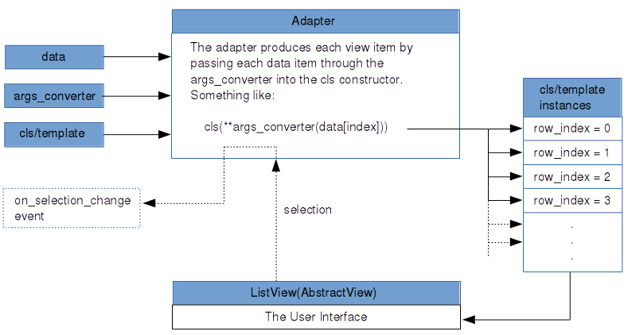

{kind=link}
Table Of Contents
List View¶
New in version 1.5.
Warning
This code is still experimental, and its API is subject to change in a future version.
The ListView implements an AbstractView as a vertical, scrollable,pannable list clipped to the scrollview’s bounding box and contains list item view instances.
The AbstractView has one property: adapter. The adapter can be one of the following: a SimpleListAdapter, a ListAdapter or a DictAdapter. The Adapter can make use of args_converters to prepare you data for passing into the constructor for each item view instantiation.
For an overview of how all these components fit together, please see the adapters module documentation.
Introduction¶
Lists are central parts of many software projects. Kivy’s approach to lists includes providing solutions for simple lists, along with a substantial framework for building lists of moderate to advanced complexity. For a new user, it can be difficult to ramp up from simple to advanced. For this reason, Kivy provides an extensive set of examples (with the Kivy package) that you may wish to run first, to get a taste of the range of functionality offered. You can tell from the names of the examples that they illustrate the “ramping up” from simple to advanced:
- kivy/examples/widgets/lists/list_simple.py
- kivy/examples/widgets/lists/list_simple_in_kv.py
- kivy/examples/widgets/lists/list_simple_in_kv_2.py
- kivy/examples/widgets/lists/list_master_detail.py
- kivy/examples/widgets/lists/list_two_up.py
- kivy/examples/widgets/lists/list_kv.py
- kivy/examples/widgets/lists/list_composite.py
- kivy/examples/widgets/lists/list_cascade.py
- kivy/examples/widgets/lists/list_cascade_dict.py
- kivy/examples/widgets/lists/list_cascade_images.py
- kivy/examples/widgets/lists/list_ops.py
Many of the examples feature selection, some restricting selection to single selection, where only one item at at time can be selected, and others allowing multiple item selection. Many of the examples illustrate how selection in one list can be connected to actions and selections in another view or another list.
Find your own way of reading the documentation here, examining the source code for the example apps and running the examples. Some may prefer to read the documentation through first, others may want to run the examples and view their code. No matter what you do, going back and forth will likely be needed.
Basic Example¶
In its simplest form, we make a listview with 100 items:
from kivy.uix.listview import ListView
from kivy.base import runTouchApp
class MainView(ListView):
def __init__(self, **kwargs):
super(MainView, self).__init__(
item_strings=[str(index) for index in range(100)])
if __name__ == '__main__':
runTouchApp(MainView())
Or, we could declare the listview using the kv language:
from kivy.uix.boxlayout import BoxLayout
from kivy.lang import Builder
from kivy.base import runTouchApp
Builder.load_string("""
<MyListView>:
ListView:
item_strings: [str(index) for index in range(100)]
""")
class MyListView(BoxLayout):
pass
if __name__ == '__main__':
runTouchApp(MyListView())
Using an Adapter¶
Behind the scenes, the basic example above uses the SimpleListAdapter. When the constructor for the ListView sees that only a list of strings is provided as an argument (called item_strings), it creates a SimpleListAdapter using the list of strings.
“Simple” in SimpleListAdapter means without selection support. It is a scrollable list of items that does not respond to touch events.
To use a SimpleListAdaper explicitly when creating a ListView instance, do:
simple_list_adapter = SimpleListAdapter(
data=["Item #{0}".format(i) for i in range(100)],
cls=Label)
list_view = ListView(adapter=simple_list_adapter)
The instance of SimpleListAdapter has a required data argument which contains data items to use for instantiating Label views for the list view (note the cls=Label argument). The data items are strings. Each item string is set by the SimpleListAdapter as the text argument for each Label instantiation.
You can declare a ListView with an adapter in a kv file with special attention given to the way longer python blocks are indented:
from kivy.uix.boxlayout import BoxLayout
from kivy.base import runTouchApp
from kivy.lang import Builder
# Note the special nature of indentation in the adapter declaration, where
# the adapter: is on one line, then the value side must be given at one
# level of indentation.
Builder.load_string("""
#:import label kivy.uix.label
#:import sla kivy.adapters.simplelistadapter
<MyListView>:
ListView:
adapter:
sla.SimpleListAdapter(
data=["Item #{0}".format(i) for i in range(100)],
cls=label.Label)
""")
class MyListView(BoxLayout):
pass
if __name__ == '__main__':
runTouchApp(MyListView())
ListAdapter and DictAdapter¶
For most use cases, your data is more complex than a simple list of strings. Selection functionality is also often needed. The ListAdapter and DictAdapter cover these more elaborate needs.
The ListAdapter is the base class for DictAdapter, so we can start with it.
Refer to the ListAdapter docs for details, but here is a synopses of its arguments:
- data: strings, class instances, dicts, etc. that form the base data for instantiating views.
- cls: a Kivy view that is to be instantiated for each list item. There are several built-in types available, including ListItemLabel and ListItemButton, or you can make your own class that mixes in the required SelectableView.
- template: the name of a Kivy language (kv) template that defines the Kivy view for each list item.
Note
Pick only one, cls or template, to provide as an argument.
- args_converters: a function that takes a data item object as input and uses it to build and return an args dict, ready to be used in a call to instantiate item views using the item view cls or template. In the case of cls, the args dict becomes a kwargs constructor argument. For a template, it is treated as a context (ctx) but is essentially similar in form to the kwargs usage.
- selection_mode: a string with the value ‘single’, ‘multiple’ or other.
- allow_empty_selection: a boolean, which if False (the default), forces there to always be a selection if there is data available. If True, selection happens only as a result of user action.
In narrative, we can summarize as follows:
A listview’s adapter takes data items and uses an args_converter function to transform them into arguments for creating list item view instances, using either a cls or a kv template.
In a graphic, a summary of the relationship between a listview and its components can be summarized as follows:
Please refer to the adapters documentation for more details.
A DictAdapter has the same arguments and requirements as a ListAdapter except for two things:
- There is an additional argument, sorted_keys, which must meet the requirements of normal python dictionary keys.
- The data argument is, as you would expect, a dict. Keys in the dict must include the keys in the sorted_keys argument, but they may form a superset of the keys in sorted_keys. Values may be strings, class instances, dicts, etc. (The args_converter uses it accordingly).
Using an Args Converter¶
A ListView allows use of built-in list item views, such as ListItemButton, your own custom item view class or a custom kv template. Whichever type of list item view is used, an args_converter function is needed to prepare, per list data item, kwargs for the cls or the ctx for the template.
Note
Only the ListItemLabel, ListItemButton or custom classes like them (and not the simple Label or Button classes) are to be used in the listview system.
Warning
ListItemButton inherits the background_normal and background_down properties from the Button widget, so the selected_color and deselected_color are not represented faithfully by default.
Here is an args_converter for use with the built-in ListItemButton specified as a normal Python function:
def args_converter(row_index, an_obj):
return {'text': an_obj.text,
'size_hint_y': None,
'height': 25}
and as a lambda:
args_converter = lambda row_index, an_obj: {'text': an_obj.text,
'size_hint_y': None,
'height': 25}
In the args converter example above, the data item is assumed to be an object (class instance), hence the reference an_obj.text.
Here is an example of an args converter that works with list data items that are dicts:
args_converter = lambda row_index, obj: {'text': obj['text'],
'size_hint_y': None,
'height': 25}
So, it is the responsibility of the developer to code the args_converter according to the data at hand. The row_index argument can be useful in some cases, such as when custom labels are needed.
An Example ListView¶
Now, to some example code:
from kivy.adapters.listadapter import ListAdapter
from kivy.uix.listview import ListItemButton, ListView
data = [{'text': str(i), 'is_selected': False} for i in range(100)]
args_converter = lambda row_index, rec: {'text': rec['text'],
'size_hint_y': None,
'height': 25}
list_adapter = ListAdapter(data=data,
args_converter=args_converter,
cls=ListItemButton,
selection_mode='single',
allow_empty_selection=False)
list_view = ListView(adapter=list_adapter)
This listview will show 100 buttons with text of 0 to 100. The args_converter function converts the dict items in the data and instantiates ListItemButton views by passing these converted items into it’s constructor. The listview will only allow single selection and the first item will already be selected as allow_empty_selection is False. For a complete discussion on these arguments, please see the ListAdapter documentation.
The ListItemLabel works in much the same way as the ListItemButton.
Using a Custom Item View Class¶
The data used in an adapter can be any of the normal Python types or custom classes, as shown below. It is up to the programmer to assure that the args_converter performs the appropriate conversions.
Here we make a simple DataItem class that has the required text and is_selected properties:
from kivy.uix.listview import ListItemButton
from kivy.adapters.listadapter import ListAdapter
class DataItem(object):
def __init__(self, text='', is_selected=False):
self.text = text
self.is_selected = is_selected
data_items = [DataItem(text='cat'),
DataItem(text='dog'),
DataItem(text='frog')]
list_item_args_converter = lambda row_index, obj: {'text': obj.text,
'size_hint_y': None,
'height': 25}
list_adapter = ListAdapter(data=data_items,
args_converter=list_item_args_converter,
propagate_selection_to_data=True,
cls=ListItemButton)
list_view = ListView(adapter=list_adapter)
The data is passed to the ListAdapter along with an args_converter function. The propagation setting means that the is_selected property for each data item will be set and kept in sync with the list item views. This setting should be set to True if you wish to initialize the view with item views already selected.
You may also use the provided SelectableDataItem mixin to make a custom class. Instead of the “manually-constructed” DataItem class above, we could do:
from kivy.adapters.models import SelectableDataItem
class DataItem(SelectableDataItem):
# Add properties here.
pass
SelectableDataItem is a simple mixin class that has an is_selected property.
Using an Item View Template¶
SelectableView is another simple mixin class that has required properties for a list item: text, and is_selected. To make your own template, mix it in as follows:
from kivy.lang import Builder
Builder.load_string("""
[CustomListItem@SelectableView+BoxLayout]:
size_hint_y: ctx.size_hint_y
height: ctx.height
ListItemButton:
text: ctx.text
is_selected: ctx.is_selected
""")
A class called CustomListItem can then be instantiated for each list item. Note that it subclasses a BoxLayout and is thus a type of layout. It contains a ListItemButton instance.
Using the power of the Kivy language (kv), you can easily build composite list items: in addition to ListItemButton, you could have a ListItemLabel or a custom class you have defined and registered via the Factory.
An args_converter needs to be constructed that goes along with such a kv template. For example, to use the kv template above:
list_item_args_converter = \
lambda row_index, rec: {'text': rec['text'],
'is_selected': rec['is_selected'],
'size_hint_y': None,
'height': 25}
integers_dict = \
{ str(i): {'text': str(i), 'is_selected': False} for i in range(100)}
dict_adapter = DictAdapter(sorted_keys=[str(i) for i in range(100)],
data=integers_dict,
args_converter=list_item_args_converter,
template='CustomListItem')
list_view = ListView(adapter=dict_adapter)
A dict adapter is created with 1..100 integer strings as sorted_keys, and an integers_dict as data. integers_dict has the integer strings as keys and dicts with text and is_selected properties. The CustomListItem defined above in the Builder.load_string() call is set as the kv template for the list item views. The list_item_args_converter lambda function will take each dict in integers_dict and will return an args dict, ready for passing as the context (ctx) for the template.
Using CompositeListItem¶
The class CompositeListItem is another option for building advanced composite list items. The kv language approach has its advantages, but here we build a composite list view using a plain Python:
args_converter = lambda row_index, rec: \
{'text': rec['text'],
'size_hint_y': None,
'height': 25,
'cls_dicts': [{'cls': ListItemButton,
'kwargs': {'text': rec['text']}},
{'cls': ListItemLabel,
'kwargs': {'text': "Middle-{0}".format(rec['text']),
'is_representing_cls': True}},
{'cls': ListItemButton,
'kwargs': {'text': rec['text']}}]}
item_strings = ["{0}".format(index) for index in range(100)]
integers_dict = \
{str(i): {'text': str(i), 'is_selected': False} for i in range(100)}
dict_adapter = DictAdapter(sorted_keys=item_strings,
data=integers_dict,
args_converter=args_converter,
selection_mode='single',
allow_empty_selection=False,
cls=CompositeListItem)
list_view = ListView(adapter=dict_adapter)
The args_converter is somewhat complicated, so we should go through the details. Observe in the DictAdapter instantiation that CompositeListItem instance is set as the cls to be instantiated for each list item component. The args_converter will make args dicts for this cls. In the args_converter, the first three items, text, size_hint_y, and height, are arguments for the CompositeListItem itself. After that you see a cls_dicts list that contains argument sets for each of the member widgets for this composite: 2 ListItemButtons and a ListItemLabel. This is a similar approach to using a kv template described above.
For details on how CompositeListItem works, examine the code, looking for how parsing of the cls_dicts list and kwargs processing is done.
Uses for Selection¶
What can we do with selection? Combining selection with the system of bindings in Kivy, we can build a wide range of user interface designs.
We could make data items that contain the names of dog breeds, and connect the selection of dog breed to the display of details in another view, which would update automatically on selection. This is done via a binding to the on_selection_change event:
list_adapter.bind(on_selection_change=callback_function)
where callback_function() gets passed the adapter as an argument and does whatever is needed for the update. See the example called list_master_detail.py, and imagine that the list on the left could be a list of dog breeds, and the detail view on the right could show details for a selected dog breed.
In another example, we could set the selection_mode of a listview to ‘multiple’, and load it with a list of answers to a multiple-choice question. The question could have several correct answers. A color swatch view could be bound to selection change, as above, so that it turns green as soon as the correct choices are made, unless the number of touches exeeds a limit, then the answer session could be terminated. See the examples that feature thumbnail images to get some ideas, e.g., list_cascade_dict.py.
In a more involved example, we could chain together three listviews, where selection in the first controls the items shown in the second, and selection in the second controls the items shown in the third. If allow_empty_selection were set to False for these listviews, a dynamic system of selection “cascading” from one list to the next, would result.
There are so many ways that listviews and Kivy bindings functionality can be used, that we have only scratched the surface here. For on-disk examples, see:
kivy/examples/widgets/lists/list_*.py
Several examples show the “cascading” behavior described above. Others demonstrate the use of kv templates and composite list views.
- class kivy.uix.listview.SelectableView(**kwargs)[source]¶
Bases: object
The SelectableView mixin is used to design list items and other classes that are to be instantiated by an adapter for use in a listview. The ListAdapter and DictAdapter adapters are selection-enabled. select() and deselect() are to be overridden with display code to mark items as selected or not, if desired.
- deselect(*args)[source]¶
The list item is responsible for updating the display for being unselected, if desired.
- index¶
The index into the underlying data list or the data item this view represents.
index is a NumericProperty, default to -1.
- is_selected¶
A SelectableView instance carries this property, which should be kept in sync with the equivalent property in the data item it represents.
is_selected is a BooleanProperty, default to False.
- class kivy.uix.listview.ListItemButton(**kwargs)[source]¶
Bases: kivy.uix.listview.ListItemReprMixin, kivy.uix.listview.SelectableView, kivy.uix.button.Button
ListItemButton mixes SelectableView with Button to produce a button suitable for use in ListView.
- deselected_color¶
deselected_color is a ListProperty and defaults to [0., 1., 0., 1].
- selected_color¶
selected_color is a ListProperty and defaults to [1., 0., 0., 1].
- class kivy.uix.listview.ListItemLabel(**kwargs)[source]¶
Bases: kivy.uix.listview.ListItemReprMixin, kivy.uix.listview.SelectableView, kivy.uix.label.Label
ListItemLabel mixes SelectableView with Label to produce a label suitable for use in ListView.
- class kivy.uix.listview.CompositeListItem(**kwargs)[source]¶
Bases: kivy.uix.listview.SelectableView, kivy.uix.boxlayout.BoxLayout
CompositeListItem mixes SelectableView with BoxLayout for a generic container-style list item, to be used in ListView.
- background_color¶
ListItem sublasses Button, which has background_color, but for a composite list item, we must add this property.
background_color is a ListProperty and defaults to [1, 1, 1, 1].
- deselected_color¶
deselected_color is a ListProperty and defaults to [.33, .33, .33, 1].
- representing_cls¶
Which component view class, if any, should represent for the composite list item in __repr__()?
representing_cls is an ObjectProperty and defaults to None.
- selected_color¶
selected_color is a ListProperty and defaults to [1., 0., 0., 1].
- class kivy.uix.listview.ListView(**kwargs)[source]¶
Bases: kivy.uix.abstractview.AbstractView, kivy.event.EventDispatcher
ListView is a primary high-level widget, handling the common task of presenting items in a scrolling list. Flexibility is afforded by use of a variety of adapters to interface with data.
The adapter property comes via the mixed in AbstractView class.
ListView also subclasses EventDispatcher for scrolling. The event on_scroll_complete is used in refreshing the main view.
For a simple list of string items, without selection, use SimpleListAdapter. For list items that respond to selection, ranging from simple items to advanced composites, use ListAdapter. For an alternate powerful adapter, use DictAdapter, rounding out the choice for designing highly interactive lists.
Events : - on_scroll_complete: (boolean, )
Fired when scrolling completes.
- container¶
The container is a GridLayout widget held within a ScrollView widget. (See the associated kv block in the Builder.load_string() setup). Item view instances managed and provided by the adapter are added to this container. The container is cleared with a call to clear_widgets() when the list is rebuilt by the populate() method. A padding Widget instance is also added as needed, depending on the row height calculations.
container is an ObjectProperty and defaults to None.
- divider¶
[TODO] Not used.
- divider_height¶
[TODO] Not used.
- item_strings¶
If item_strings is provided, create an instance of SimpleListAdapter with this list of strings, and use it to manage a no-selection list.
item_strings is a ListProperty and defaults to [].
- row_height¶
The row_height property is calculated on the basis of the height of the container and the count of items.
row_height is a NumericProperty and defaults to None.
- scrolling¶
If the scroll_to() method is called while scrolling operations are happening, a call recursion error can occur. scroll_to() checks to see that scrolling is False before calling populate(). scroll_to() dispatches a scrolling_complete event, which sets scrolling back to False.
scrolling is a BooleanProperty and defaults to False.